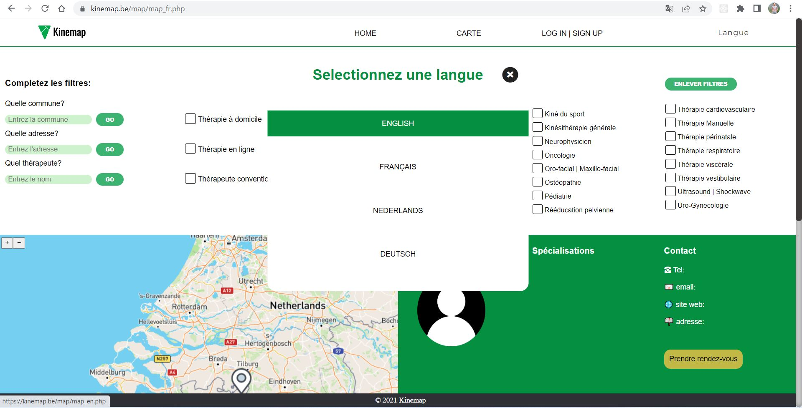
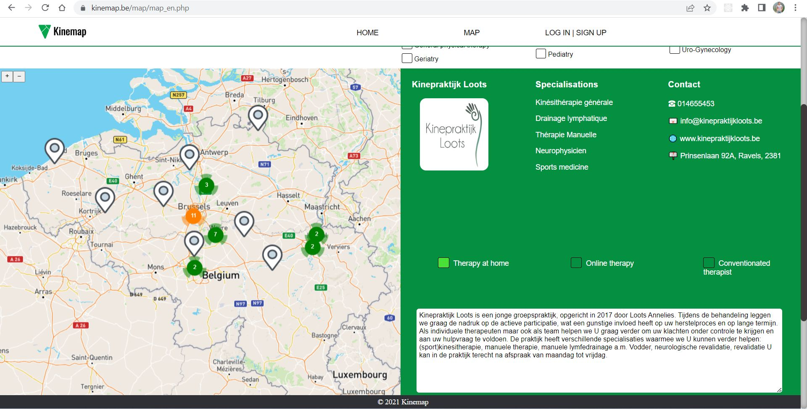
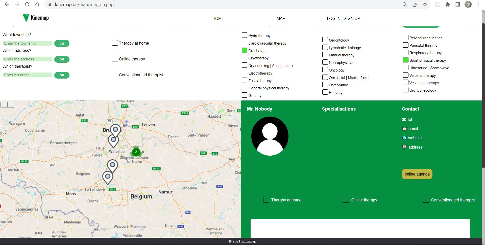
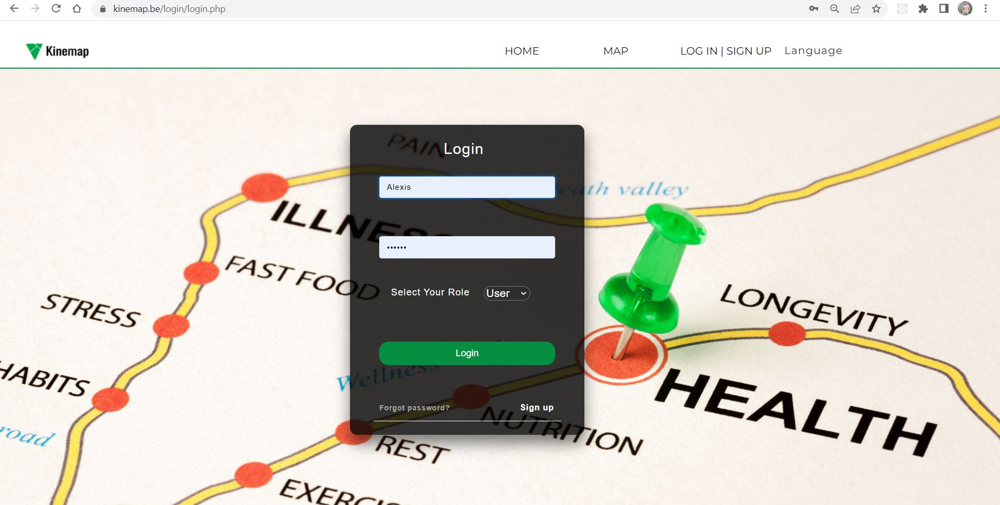
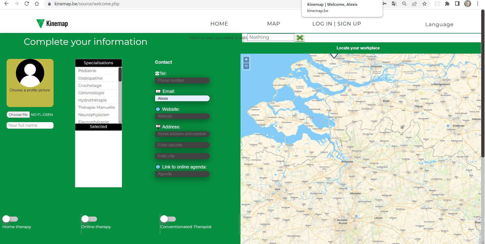
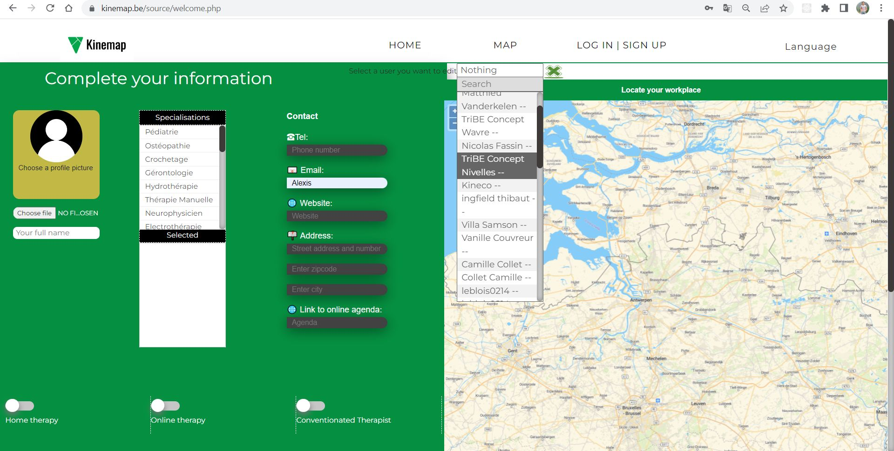
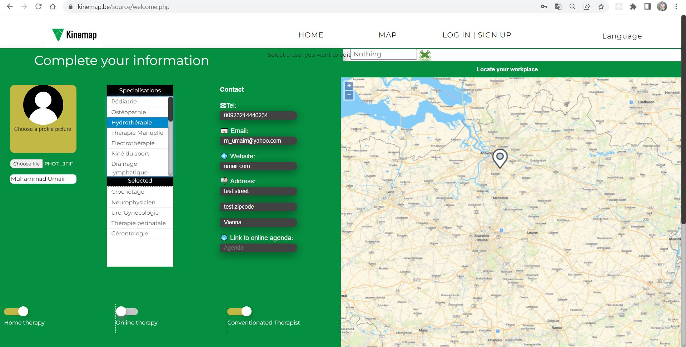
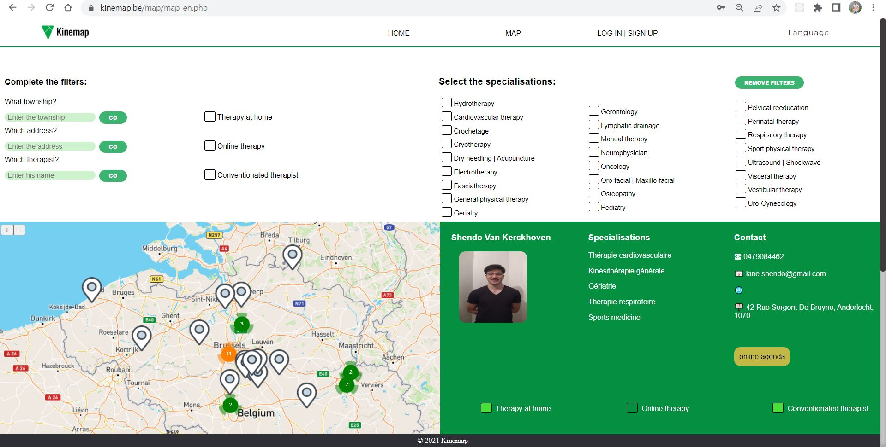
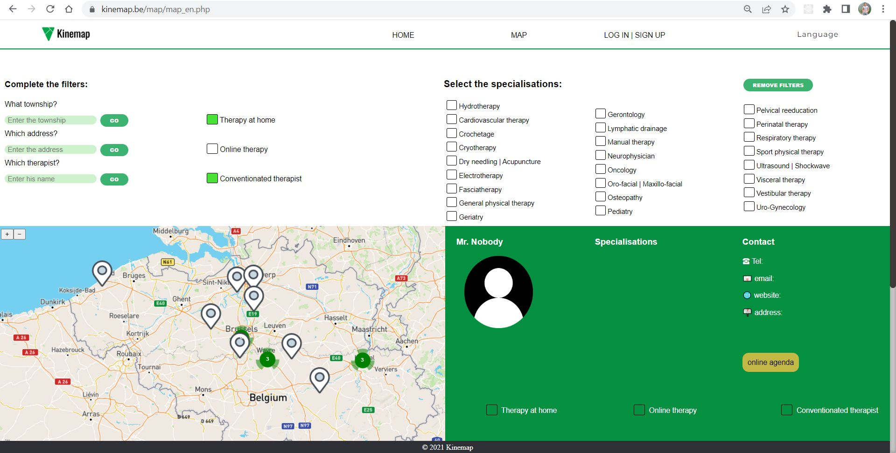

<div class="container">
    <div class="row topspace">
        <article class="col-sm-8 maincontent">
            <div class="your-class">
                <div></div>
                <div></div>
                <div></div>
                <div></div>
                <div></div>
                <div></div>
                <div></div>
                <div></div>
                <div></div>
                <div></div>
            </div>
            <br>
            <p>In 2019, I won this project in my freelance career to build a map based GIS solution for a therapist in
                Belgium, which would allow other therapists to register themself on the map as well as choose their
                specialities & working locations etc. spatially.</p>
            <br>
            <p>Project involved allowing therapists to mark them self up on a map, reverse geocode their location and
                save their speciliaties for others to look for. Main page allowed a user to search for specific
                therapist and book their appointments. Openlayers was used as web mapping library, PostgreSQL for
                handling GIS data and MySQL for handling user database.</p>
            <br>
            <p>This was a freelance project that I won over Upwork as a freelancer and developed the portal from scratch
                to top & deployed it over hosting server of the client.</p>
        </article>
        <aside class="col-md-4 sidebar sidebar-left">
            <div class="widget">
                <ul class="list-group">
                    <li class="list-group-item pull-left">
                        <h4 class="custom-subsubheader">Freelance Project</h4>
                        <p><strong>2019</strong></p>
                        <p>Website: <a href="http://kinemap.be/" target="_blank">View</a></p>
                    </li>
                </ul>
            </div>
        </aside>
    </div>
</div>